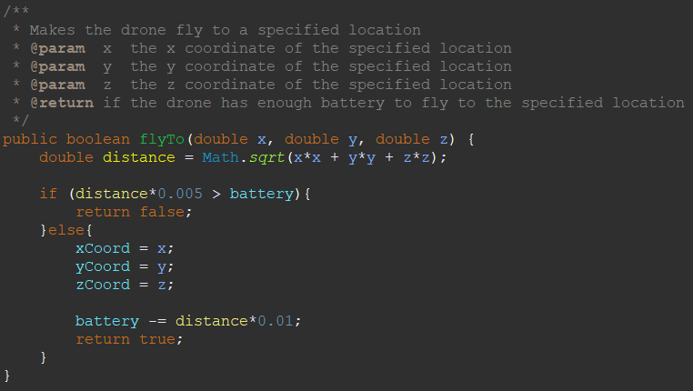
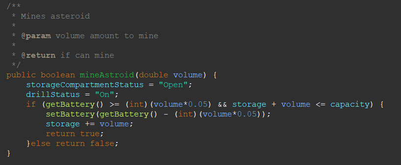
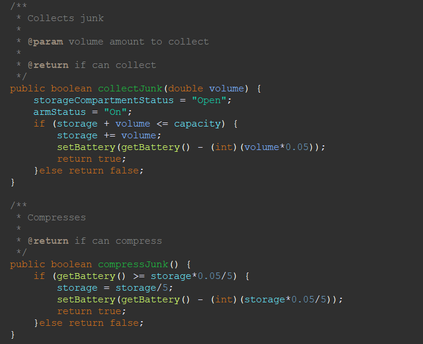

Object-orientated programming, also known as OOP, was a structure of programming first coined in 1967. OOP makes use of predefined blocks of code, known as objects and classes, to organize code. Before the use of OOP, procedural programming was used, where each line of code was run set-by-step.
What is an object?
An object in real life is a thing with an identity, a state, and behaviours.
For example, the car below would have an identity of Mr. Smith’s car. It’s state may include blue, sedan and 1 year old. Some behaviours it may have are drive, park, filling up the gas, and reverse.

Similar to an object in OOP, the identity is how each separate object is identified. Their state is made up of variables containing the data. Their behaviours are composed of methods that allow the object to perform certain actions and tasks.
Object vs Class
What's the difference between an object and a class? The class is the template from which the object is built. For example, a class could be a car and Mr. Smith’s car would be an object. This is because it is built off of the template of a car, but has its own attributes and things it could do. In addition, many other different cars may all be created from the same template, the car.
Characteristics of an Object
As mentioned already, an object is made up of three main parts, its name, its attributes, and its behaviours. The identifier would be the name of the object when you want to refer to it. The attributes are variables where the data contained represents the attributes of the object. All of its behaviours are methods that act out and execute the different actions of the object.
Constructors are a special part of every class, which is a method to create a new object from the class. The constructor must have the same name as the class and may have parameters passed in that are stored as part of the object’s attributes. A class may also have multiple constructors, but all still make the same type of object.
All attributes and methods are encapsulated with another modifier which is either public or private. Public means that a variable or method can be used both inside and outside the class. Private means that a variable or method can only be accessed from inside the class. Having private attributes or methods prevents attributes or methods from being used incorrectly. To access these attributes or methods, they must be passed through a public method, such as get and set methods, which can be error trapped to stop incorrect values.
In addition to public and private, methods and attributes can also have another modifier called static. If something is static, it can be used without creating a new object. Ones that are not static can only be accessed when a new object is created.
How to represent classes?
Each class could get very elaborate, with lots of different attributes and methods, making it hard to organize. This is where the unified modelling language, or UML, comes in. UML is a way of easily and clearly showing the structure of a class.

The first rectangle is for the name of the class. The second rectangle is for every attribute, listed with their name, then their data type. In the last rectangle, the methods are listed out, with their name, followed by their parameters with the parameter type, then followed by the return type. In front of the variables and methods are a plus or a minibus, where plus means it’s public and minus means it’s private.
Inheritance
Another unique aspect of classes is inheritance. In real life, inheritance works when a child inherits its parent’s attributes. In OOP, inheritance is between classes, where the subclass or child class can inherit attributes and methods from its parent class. Unlike real life, in java, each class can only extend from one superclass, but a superclass can have many subclasses. The relationship between the subclass and superclass is an Is-A relationship. This is because the subclass is-a version of the parent class. On the other hand, attributes of a class are considered to have a Has-A relationship. This is because the class has the attribute.
A subclass will inherit all public methods from its superclass, but its private methods are not callable from the subclasses. Similarly, with attributes, public attributes can be accessed in the subclass but the private attributes must be accessed from the get methods. When calling the superclass constructor, the keyword super is used. This must be the first line of the subclass constructor to call the superclass constructor, and the constructor it calls is dependent on the parameter passed to it.
For example, if we had a class for cars, it may include attributes such as top speed, colour, model and age. Methods may include filling up gas, driving forward and parking.
public class car{
private double topSpeed;
private String Colour;
private String model;
private int age;
public car(){
//constructor
}
public void fillingGas(double gas) {
//code
}
public void driving(double distance) {
//code
}
public void parking() {
//code
}
}
Then we can have a subclass for pickup trucks. The attributes contain top speed, colour, model and age, which are all from the superclass, but it also has the attribute, bed size, which is unique to the pickup truck. The methods other than the ones from the superclass also have another method for towing.
public class pickup extends car{
//new attribute
private double bedSize;
public pickup(){
//calling superclass constructor
super();
//rest of the constructor
}
//three methods from the superclass
public void fillingGas(double gas) {
super.fillingGas(gas);
}
public void driving(double distance) {
super.driving(distance);
}
public void parking() {
super.parking();
}
//new method
public void towing(double weight) {
//code
}
}
A subclass will inherit all public methods from its superclass, but its private methods are not callable from the subclasses. Similarly, with attributes, public attributes can be accessed in the subclass but the private attributes must be accessed from the get methods. When calling the superclass constructor, the keyword super is used. This must be the first line of the subclass constructor to call the superclass constructor, and the constructor it calls is dependent on the parameter passed to it.
If we have a method that is present in the superclass and subclass, the subclass method will override the superclass method. To call the superclass method, the subclass object has to use super.method().
Polymorphism
Polymorphism means many forms. The concept is how and which methods are called with overridden methods. With superclass objects, you can initialize it as a subclass. This is because all subclasses IS-A superclass object. For example, we have a class Animal, a subclass Bird extends Animal and another subclass Pigeon that extends Bird. When we initialize an Animal object as a Bird, it can only use Animal methods and attributes, but any method call to an Animal method that is overridden by the Bird class will use the implementation of the method in the Bird class. This acts the same way with an Animal class with Pigeon and Bird with Pigeon.
Abstract classes and Interfaces
Abstract classes are classes that may have abstract methods, which are methods that are not implemented, but not all have to be abstract. Abstract classes and abstract methods contain the word abstract in its header. Abstract classes cannot be instantiated but other classes can inherit from the abstract class. What this allows us to do is have a very broad and abstract frame of a class. This allows us to create a definition of what that class should do and what children classes should share.
Interfaces are similar to abstract classes, as they have abstract methods too, but different from abstract classes, all methods are abstract, and cannot have any fields or constructors. The methods of an interface do not have to be stated to be abstract because they all have to be abstract. Interfaces cannot be instantiated, but a benefit is that classes can implement multiple interfaces.
Example
For an assignment, we made a class of a Space Collector, that has attributes for its location as a coordinate, the amount of battery left, its name and also the speed at its flying. It has the set-and-get methods, but also methods such as charging, flying to a certain location and speeding up.
 A code snippet from the flyTo() method in the Space Drone classThen we made two subclasses, Ore Extraction and Space Junk Collector. The Ore Extraction has extra attributes for how full the storage is and what the status of the drill is and the status of the storage. It also has extra methods for mining asteroids and depositing the ore.
 A code snippet of mineAsteroid() method in the Ore Extraction classThe other subclass, Space Junk Collector, has extra attributes for storage, arm status and storage capacity. It has more methods such as collecting junk, depositing junk and also compressing junk.
 A code snippet of the collectJunk() and compressJunk() methods in the Space Junk Collector classThe full code is present in the resources tab.